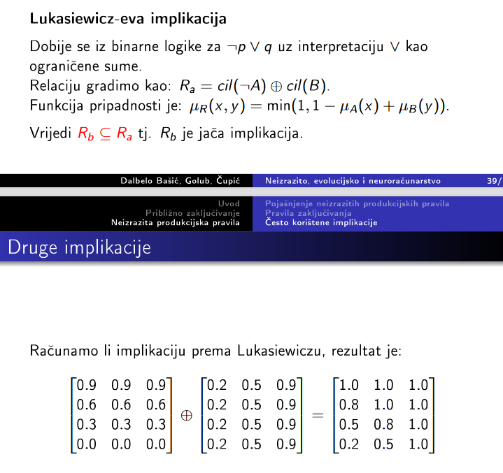

Može mala pomoć?
Dakle, ako se kod ove implikacije uzima min(1, 1 - mi(a) + mi(b)), nije onda ova matrica dolje krivo izračunata? Recimo za (1, 1) imamo mi(a) = 0.9, mi(b) = 0.2, pa 1 - 0.9 + 0.2 = 0.3. min(1, 0.3) bi trebao biti 0.3. Ili sam ja negdje nešto fulao/krivo shvatio? Hvala